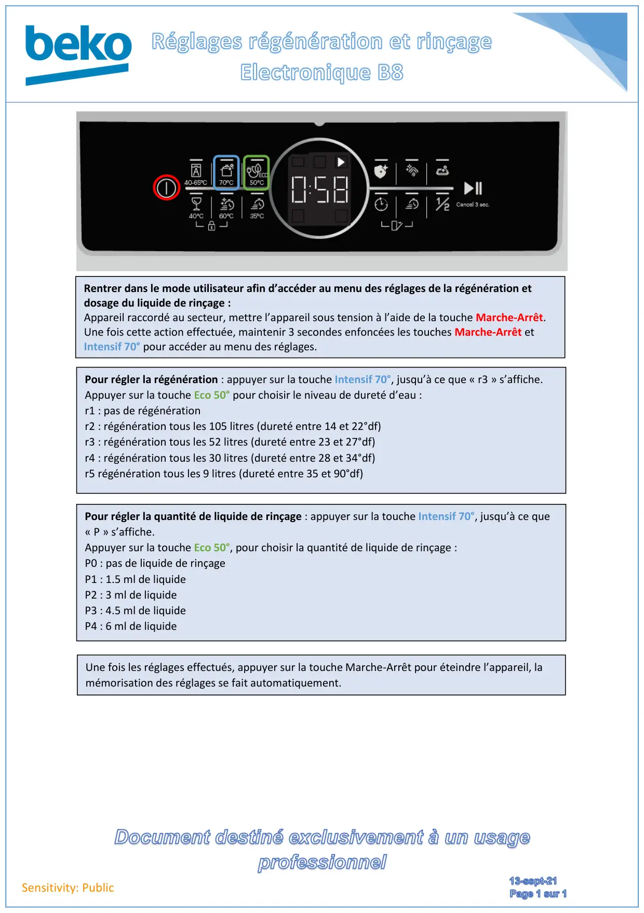

Réglage régénération liquide rinçage electronique lave vaisselle B8

Sensitivity: PublicRentrer dans le mode utilisateur afin d’accéder au menu des réglages de la régénération etdosage du liquide de rinçage :Appareil raccordé au secteur, mettre l’appareil sous tension à l’aide de la touche Marche-Arrêt.Une fois cette action effectuée, maintenir 3 secondes enfoncées les touches Marche-Arrêt etIntensif 70° pour accéder au menu des réglages.Pour régler la régénération : appuyer sur la touche Intensif 70°, jusqu’à ce que « r3 » s’affiche.Appuyer sur la touche Eco 50° pour choisir le niveau de dureté d’eau :r1 : pas de régénérationr2 : régénération tous les 105 litres (dureté entre 14 et 22°df)r3 : régénération tous les 52 litres (dureté entre 23 et 27°df)r4 : régénération tous les 30 litres (dureté entre 28 et 34°df)r5 régénération tous les 9 litres (dureté entre 35 et 90°df)Pour régler la quantité de liquide de rinçage : appuyer sur la touche Intensif 70°, jusqu’à ce que« P » s’affiche.Appuyer sur la touche Eco 50°, pour choisir la quantité de liquide de rinçage :P0 : pas de liquide de rinçageP1 : 1.5 ml de liquideP2 : 3 ml de liquideP3 : 4.5 ml de liquideP4 : 6 ml de liquideUne fois les réglages effectués, appuyer sur la touche Marche-Arrêt pour éteindre l’appareil, lamémorisation des réglages se fait automatiquement.
1 / 1